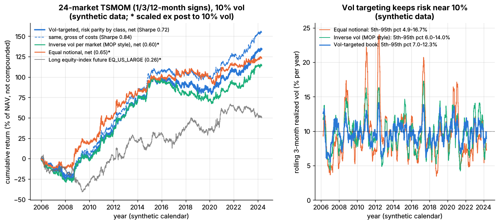

Position sizing and risk budgeting¶
TL;DR
- Sizing turns a forecast into a position; it decides drawdowns and survival more than Sharpe.
- Volatility targeting scales each bet by 1/σ so it carries a set risk; risk budgeting splits the total across markets, strategies or pods.
- The Kelly criterion maximizes growth at leverage μ/σ², given the true Sharpe. At twice true Kelly growth is zero, so practitioners run a quarter to half Kelly or less.
- Stop-losses help when returns trend and cost money under a random walk (Kaminski & Lo 2014)
[Verified].- Synthetic lab result (Lab 19): vol targeting held rolling volatility at 7.0–12.3% (5th–95th percentile) against 4.9–16.7% for equal notional.
Level: Core · Pipeline stage: portfolio · Last verified: 2026-11
| Field | Value |
|---|---|
| Purpose (the question it answers) | How big should each position, strategy and the book be? |
| Inputs → Outputs | Signals, ex-ante volatilities and correlations, risk budgets, drawdown, leverage limits → target notional per position (fraction of NAV) |
| Used by strategies | Trend following · Carry and cross-asset premia · Factor investing · Factor timing and crowding · Momentum · Value, quality, low vol · Volatility risk premium · Cross-sectional alpha · Stat arb overview |
| Latency / compute regime | Daily batch: milliseconds for 50 futures, seconds for 3,000 stocks; intraday limits live in M9 |
| Key parameters | Volatility target 8–15%, 10% common [Lore]; EWMA center of mass 20–60 days; Kelly fraction 0.25–0.5; drawdown triggers 5–10%; gross cap 3–6× NAV (futures); buffer 10–30% of a typical position |
| Main failure modes | Lagging volatility estimates, correlation spikes, Kelly on an overstated Sharpe, procyclical selling |
| Lab | Lab 19 |
Intuition¶
Budget by risk, not revenue: a 2%-volatility bond future and a 40%-volatility gas future get the same risk, so the bond gets 20× the notional. The forecast says which way; sizing says how much, and how much less after a bad month. Over-sizing a good forecast ruins a fund as surely as a bad one.
Where it sits in the pipeline¶
flowchart LR
f5["F5 combined forecasts"] --> p7
p1["P1 and P2 risk model,<br/>vols and correlations"] --> p7
l1["L1 live P and L,<br/>drawdown vs peak"] --> p7
p7["P7 sizing and<br/>risk budgets"] --> p34["P3 or P4 optimizer<br/>(equity books)"]
p7 --> p6["P6 trade toward aim,<br/>no-trade buffer"]
p34 --> p6
p6 --> e1["E1 execution"]
m9["M9 hard limits"] -.-> p6
style p7 fill:#ffd54f,stroke:#333The algorithm¶
- Estimate each position's ex-ante volatility (EWMA, 60-day center of mass) and the correlation matrix (P1, P2).
- Assign risk budgets: equal per asset class or strategy (risk parity, P4), or tilted by conviction.
- Size inversely to volatility: weight = signal × budget / σ.
- Scale the book so its ex-ante volatility equals the target.
- Apply caps: per position, gross leverage, margin.
- Multiply by a drawdown scaler.
- Trade only when the target leaves a no-trade band (P6).
import numpy as np
def vol_target_positions(signal, ann_vol, corr, asset_class, target_vol=0.10, asset_cap=0.40):
"""As in Lab 19: notional / NAV per market. Equal risk per class, inverse vol inside it."""
classes, counts = np.unique(asset_class, return_counts=True)
n_in_class = dict(zip(classes, counts))
budget = np.array([1.0 / (len(classes) * n_in_class[c]) for c in asset_class])
w = signal * budget / ann_vol
port_vol = np.sqrt(w @ (corr * np.outer(ann_vol, ann_vol)) @ w)
if port_vol > 0:
w = w * target_vol / port_vol # whole book at the target ex-ante vol
cap = asset_cap * target_vol / ann_vol # max standalone vol per market
return np.clip(w, -cap, cap)
def trade_with_buffer(target, current, band):
"""As in Lab 19: move only when the target leaves the band, and only to its edge."""
gap = target - current
return np.where(np.abs(gap) > band, target - np.sign(gap) * band, current)
# --- Illustrative extensions, not in Lab 19 ---
def kelly_leverage(mu, sigma, fraction=0.5):
"""Growth-optimal leverage mu / sigma^2 (continuous time), scaled down."""
return fraction * mu / sigma ** 2
def drawdown_scaler(nav, cut_dd=0.05, stop_dd=0.10, min_scale=0.5):
"""1.0 until a 5% drawdown, linear to 0.5 at 10%, then flat (stop and review)."""
dd = 1.0 - nav[-1] / np.max(nav)
if dd >= stop_dd:
return 0.0
if dd <= cut_dd:
return 1.0
return 1.0 - (1.0 - min_scale) * (dd - cut_dd) / (stop_dd - cut_dd)
def size_book(signal, ann_vol, corr, asset_class, nav, current, typical, max_gross=6.0):
target = vol_target_positions(signal, ann_vol, corr, asset_class) * drawdown_scaler(nav)
gross = np.abs(target).sum()
if gross > max_gross: # leverage limit, notional / NAV
target = target * max_gross / gross
return trade_with_buffer(target, current, 0.25 * typical)
Worked example with numbers¶
Illustrative. Excess return μ = 7%, volatility σ = 10% at 1× (Sharpe 0.7). Kelly leverage is μ/σ² = 0.07 / 0.01 = 7×. Log growth at leverage f is fμ − f²σ²/2; the chance of ever losing half is 0.5^(2/c − 1) at Kelly fraction c.
| Leverage | Kelly fraction | Volatility | Growth: fμ − f²σ²/2 | P(ever −50%) |
|---|---|---|---|---|
| 1× | 1/7 | 10% | 0.07 − 0.005 = 6.5% | 0.01% |
| 1.75× | 1/4 | 17.5% | 0.1225 − 0.0153 = 10.7% | 0.8% |
| 3.5× | 1/2 | 35% | 0.245 − 0.0613 = 18.4% | 12.5% |
| 7× | 1 | 70% | 0.49 − 0.245 = 24.5% | 50% |
| 14× | 2 | 140% | 0.98 − 0.98 = 0% | 100% |
Half Kelly keeps 75% of the growth at half the volatility. If the true Sharpe is 0.35 (a routine haircut), "full Kelly" 7× is twice true Kelly: zero growth, certain halving. A 10% target here is 1/7 Kelly.
Volatility rescale. Ex-ante volatility jumps from 10% to 14%: scale 10/14 = 0.71, gross leverage 3.8× → 2.7× NAV.
Drawdown cut. NAV 93 against a peak of 100: scale = 1 − 0.5 × (7 − 5)/(10 − 5) = 0.8.
Key parameters and how practitioners tune them¶
- Target volatility. 10% in Hurst et al.'s trend simulations
[Verified]; pods often run lower[Lore]. - Estimator. Moskowitz et al. use a 60-day center of mass
[Verified]; shorter windows churn; floors cap notional in quiet markets[Lore]. - Kelly fraction. A quarter to a half
[Lore], less for backtest-only Sharpes. - Across strategies or pods. Start near equal risk, tilt toward capacity-adjusted Sharpe, and cut on drawdowns: one multi-manager reportedly halves capital at a 5% loss and exits near 7.5%
[Reported](how firms combine strategies).
Textbook version vs what firms actually do¶
- Kelly. Kelly (1956) derived the growth-optimal bet
[Verified]; Thorp used fractional Kelly in practice[Reported]; full Kelly's short-run drawdowns are large (MacLean, Thorp & Ziemba)[Reported]. - Volatility timing. Volatility-managed factors earn large alphas (Moreira & Muir 2017)
[Verified], but across 103 equity strategies real-time versions do not systematically win (Cederburg et al. 2020)[Verified]. Across 60+ assets since 1926, Sharpe rises for equities and credit only, and left tails shrink (Harvey et al. 2018)[Verified]. Risk-managed momentum nearly doubles its Sharpe (Barroso & Santa-Clara 2015)[Verified]. Mixed for returns; consistent for risk control. - Stop-losses lower expected return under a random walk and can add value under momentum (Kaminski & Lo 2014)
[Verified]. - Drawdown control. Risk proportional to the cushion above a floor is optimal (Grossman & Zhou 1993)
[Verified]; pod ladders are discrete versions.
How to tell if it's working¶
- Realized/target volatility near 1 in a narrow band; realized risk shares near budgets; little turnover from rescaling.

Right panel: rolling volatility of the vol-targeted book hugs the dotted 10% target; equal notional swings far more. Synthetic data.
Synthetic lab results: realized volatility 9.8% against 10%; risk shares equity 36%, rates 25%, commodities 20%, FX 19% (equities exceed 25%: the budget ignores within-class correlation), against 92% for commodities plus equities under equal notional; the buffer cuts turnover from 252× to 141× NAV. Real volatility jumps, so real bands are wider.
Failure modes and pitfalls¶
- Calm before the storm. Low trailing volatility means maximum leverage before a shock
[Lore]. - Correlation breaks. Stocks and bonds fell together in 2022
[Lore]. - Procyclical selling. Vol-targeters de-gross into the same spike
[Lore]; the BIS says procyclical deleveraging amplified the August 2024 sell-off[Verified]. - Low-volatility instruments get huge notional and gap risk.
How practitioners talk about it¶
- "We run ten vol." → Annualized volatility target 10%.
- "Half Kelly at most." → Leverage at half the growth-optimal level.
- "Risk-budget the sleeves equally." → Equal risk per strategy.
- "Vol spiked, so we de-grossed." → Rescaled to the target.
- "She's at her soft stop." → Drawdown threshold that cuts capital.
- "The buffer halves our turnover." → No-trade band.
Questions you could ask a quant about this¶
- Basic: What volatility target do you run?
- Basic: Standalone volatility or risk contribution?
- Informed: Do you floor your volatility estimate?
- Informed: What Kelly fraction does your leverage imply?
- Sharp: How did your de-grossing rules behave in August 2024? 🔒
- Sharp: When do you re-risk after a drawdown cut? 🔒
Go deeper¶
Math: Kelly growth, ruin probability, risk contributions
With leverage \(f\), excess drift \(\mu\) and volatility \(\sigma\), log wealth drifts at \(g(f) = f\mu - \tfrac{1}{2}f^2\sigma^2\), maximized at \(f^* = \mu/\sigma^2\) with \(g^* = \tfrac{1}{2}(\mu/\sigma)^2 = \tfrac{1}{2}SR^2\). At \(f = c f^*\):
Log wealth is Brownian with drift \(m\) and variance \(v\), hitting \(\ln x < 0\) with probability \(e^{2m\ln x / v}\), and \(2m/v = 2/c - 1\).
Euler risk contributions for weights \(w\) and covariance \(\Sigma\):
Scaling to target \(\sigma^*\) uses \(k = \sigma^* / \sqrt{w^\top \Sigma w}\), \(O(N^2)\) per day.
Related pages¶
- How firms combine strategies (multi-strategy allocation)
- Alternatives to MVO
- Risk models
- Trend following and CTAs
- Algorithmic risk controls
- Risk management at quant firms
Sources¶
- [Verified] Kelly, J. L. (1956). "A New Interpretation of Information Rate." Bell System Technical Journal 35(4), 917–926. https://doi.org/10.1002/j.1538-7305.1956.tb03809.x (accessed 2026-11)
- [Reported] Thorp, E. O. (2008). "The Kelly Criterion in Blackjack, Sports Betting, and the Stock Market." In Handbook of Asset and Liability Management, Vol. 1, 385–428. https://doi.org/10.1016/B978-044453248-0.50015-0 (accessed 2026-11)
- [Reported] MacLean, L. C., Thorp, E. O. & Ziemba, W. T. (2011). "Good and Bad Properties of the Kelly Criterion." In The Kelly Capital Growth Investment Criterion, World Scientific, 563–572. https://doi.org/10.1142/9789814293501_0039 (accessed 2026-11)
- [Verified] Moreira, A. & Muir, T. (2017). "Volatility-Managed Portfolios." The Journal of Finance 72(4), 1611–1644. https://doi.org/10.1111/jofi.12513 (accessed 2026-11)
- [Verified] Cederburg, S., O'Doherty, M. S., Wang, F. & Yan, X. (2020). "On the performance of volatility-managed portfolios." Journal of Financial Economics 138(1), 95–117. https://doi.org/10.1016/j.jfineco.2020.04.015 (accessed 2026-11)
- [Verified] Harvey, C. R., Hoyle, E., Korgaonkar, R., Rattray, S., Sargaison, M. & Van Hemert, O. (2018). "The Impact of Volatility Targeting." The Journal of Portfolio Management 45(1), 14–33. https://doi.org/10.3905/jpm.2018.45.1.014 (accessed 2026-11)
- [Verified] Barroso, P. & Santa-Clara, P. (2015). "Momentum has its moments." Journal of Financial Economics 116(1), 111–120. https://doi.org/10.1016/j.jfineco.2014.11.010 (accessed 2026-11)
- [Verified] Kaminski, K. M. & Lo, A. W. (2014). "When do stop-loss rules stop losses?" Journal of Financial Markets 18, 234–254. https://doi.org/10.1016/j.finmar.2013.07.001 (accessed 2026-11)
- [Verified] Grossman, S. J. & Zhou, Z. (1993). "Optimal Investment Strategies for Controlling Drawdowns." Mathematical Finance 3(3), 241–276. https://doi.org/10.1111/j.1467-9965.1993.tb00044.x (accessed 2026-11)
- [Verified] Moskowitz, T. J., Ooi, Y. H. & Pedersen, L. H. (2012). "Time series momentum." Journal of Financial Economics 104(2), 228–250. https://doi.org/10.1016/j.jfineco.2011.11.003 (accessed 2026-11)
- [Verified] Hurst, B., Ooi, Y. H. & Pedersen, L. H. (2017). "A Century of Evidence on Trend-Following Investing." The Journal of Portfolio Management 44(1), 15–29. https://doi.org/10.3905/jpm.2017.44.1.015 (accessed 2026-11)
- [Verified] Aquilina, M., Lombardi, M. J., Schrimpf, A. & Sushko, V. (2024-08-27). "The market turbulence and carry trade unwind of August 2024." BIS Bulletin 90. https://www.bis.org/publ/bisbull90.htm (accessed 2026-11)
- [Reported] Business Insider via AOL (2024-10-02). "The strategy a $69 billion hedge fund uses to make sure it never loses money in the stock market" (citing the Wall Street Journal). https://www.aol.com/strategy-69-billion-hedge-fund-193733084.html (accessed 2026-11)